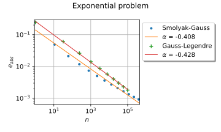

Design of experiments¶


Create mixed deterministic and probabilistic designs of experiments
Create mixed deterministic and probabilistic designs of experiments

Create a design of experiments with discrete and continuous variables
Create a design of experiments with discrete and continuous variables


Various design of experiments



Use the Smolyak quadrature